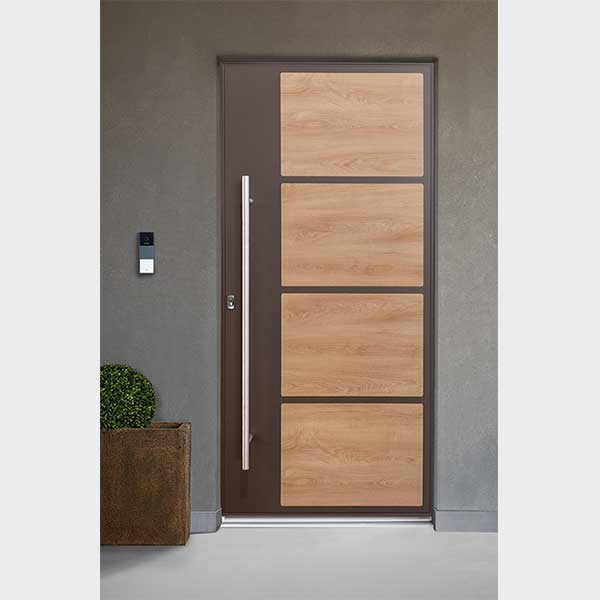

Portoni d'ingresso Simar
La scelta di una porta di ingresso Kopen vuol dire scegliere innovazione, tecnologia e risparmio energetico, per un prodotto certificato con il massimo delle prestazioni. Il Sistema KDS 100 è un sistema innovativo ed esclusivo progettato da Kopen per la realizzazione di porte di ingresso in alluminio altamente performanti sia a livello termico che di sicurezza. Il Sistema KDS 100 è un prodotto a taglio termico con barra continua composto da profili estrusi in lega di alluminio di primaria qualità con un telaio da 84 mm ed un’anta con una sezione da 98/102/121 a seconda della soluzione opzionata. Grazie all’innovazione e alla ricerca e sviluppo, Kopen presenta, con il Catalogo Porte 2018, nuove soluzioni tecniche e di design che danno la possibilità di scegliere il prodotto che meglio risponde alle esigenze del cliente finale.
Portoni Futur
Sistema a doppia guarnizione di battuta e profili a 5 camere arrotondati esternamente.

Portoni Klimalux
Sistema a tripla guarnizione di battuta e profili a 7 camere squadrati esternamente.
Portoni Klimablind
Portone blindato in PVC certificato in classe di sicurezza RC3. Sistema a tripla guarnizione di battuta e profili a 7 camere.
Portoni Blindati: come sono composti
1: Controtelaio e Telaio Fisso
Sono i due profili, realizzati in lamiera d'acciaio, che costituiscono la struttura che fissa la porta al muro.
2: Scocca
Realizzata in lamiera galvanizzata rinforzata, può anche essere coibentata, per conferirle caratteristiche di impermeabilità ai suoni ed alle temperature esterne.
3: Cerniere
In acciaio al carbonio ad altissima resistenza con perno a sfera in acciaio, consentono l'assetto della porta sia in senso orizzontale che verticale.

4: Rostri Fissi
Consentono di formare un corpo unico tra anta mobile, telaio e contro-telaio.
5: Serrature
Disponibili a Doppia Mappa, sia del tipo tradizionale che con Nucleo Intercambiabile, serrature predisposte per il Cilindro Europeo. Disponibile anche l'incontro elettrico per l'apertura della porta a distanza e serrature elettro motorizzate.
6: Limitatore di apertura
Braccetto in acciaio che consente l'apertura parziale della porta e il suo blocco.
7: Deviatori
Sia singoli che doppi sono realizzati in acciaio ad alta resistenza, per ancorarsi al meglio sia alla porta che al telaio.
8: Cornici Perimetrali
Conferisce alle porte "Ferwall" una elevata resistenza e dona un'eleganza ineguagliabile. Su richiesta cornici in legno in tinta con i pannelli.
9: Pannelli
Vasta gamma di rivestimenti composta da 16 collezioni, 170 modelli differenti di pannelli che associati alle varie tonalità di colore danno luogo ad un catalogo ampio per ogni dimensione di porta.
10: Manigliera
La porta è di serie corredata con la maniglieria standard in Alluminio Bronzato, ma può essere personalizzata scegliendo dal nostro catalogo una delle collezioni di manigliera e pomoli sia in Alluminio Argento, che Ottone Lucido, Ottone Cromo Lucido, e Ottone Cromo Satinato.
11: Spioncino
Grandangolare a 200° o spioncino elettronico: il dispositivo integra una videocamera, un display a colori , un campanello e la funzione intercom.
Blindo

Fire

Pocker

Style Glass

TOP Liberty
TOP 2